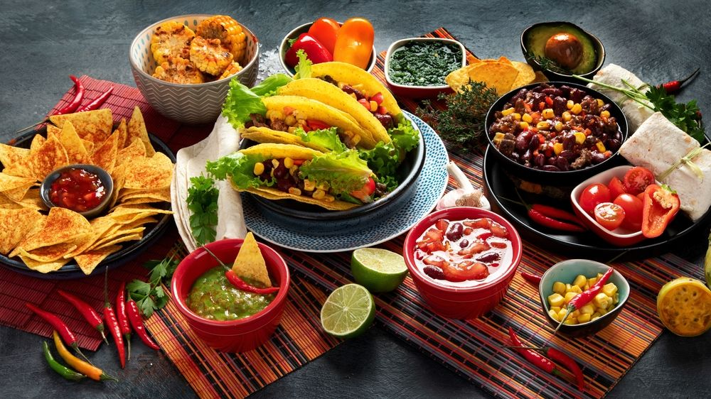

Comida Mexicana
Visão Geral
A culinária mexicana tem uma base milenar Pré-Colombiana, com evidências da cultura selectiva de plantas de milho cerca de 8 000 a.C., com uma forte influência colonial espanhola e das transformações que ocorreram no mundo nos séculos XIX e XX.
A culinária tradicional mexicana foi inscrita pela Unesco, em 2010, na lista do Património Cultural Intangível da Humanidade, uma vez que se considerou que constitui um modelo cultural que inclui práticas agrícolas e técnicas culinárias milenares, como a nixtamalização do milho. Esta culinária, que ainda é a base da culinária moderna do México, tem como ingredientes principais, além do milho, do feijão e das pimentas, outros produtos indígenas, como o tomate, a abóbora, o abacate, o cacau e a baunilha.
A tradição culinária relativa ao Dia dos Mortos no México (outra inscrição da Unesco no Património Cultural Intangível da Humanidade) também foi tomada em linha de conta na decisão da Unesco de considerar a culinária do México como Património da Humanidade. As tortillas de milho e os tamais, além de serem parte da comida diária dos mexicanos, têm um papel importante nesta celebração. Outras preparações típicas do Dia dos Mortos são as caveiras de doce, muito enfeitadas e por vezes com o nome do defunto (ou duma pessoa viva, em forma de brincadeira), e o pan-de-muerto, um pão doce adornado com figuras, por vezes na forma de crânios, e polvilhado de açúcar. Algumas bebidas tradicionais, como mezcal, atole e pulque, são também colocadas nos “altares-dos-mortos”, como oferenda.
Nossos Pratos
Pratos Tradicionais
Além das tortillas e tamales que fazem parte da comida de todos os dias, há alguns pratos típicos que foram considerados os mais populares no México, de acordo com um inquérito realizado por uma instituição especializada. A iguaria que está em primeiro lugar é o mole, em particular o mole poblano, que já foi provado pelo menos uma vez por 99% dos mexicanos; este molho, geralmente confeccionado com vários tipos de pimentas e chocolate, é tradicionalmente comido em festas de aniversário e casamento, muitas vezes acompanhando guajolote (peru).
Em segundo e terceiro lugar, repetivamente, encontram-se o pozole, uma sopa ou guisado de milho e carne de porco, originário do oeste do México, muito consumido durante o Natal; e a cochinita pibil, uma preparação baseada em carne de porco marinada com achiote, tipicamente avermelhada, e tradicionalmente cozinhada num “forno-de-terra”; originária de Yucatán, é tipicamente servida em tortas e tacos, com chiles habaneros (uma variedade de malagueta muito picante), cebolas curtidas com laranja amarga, e horchata. Entre outros pratos populares encontram-se duas especialidades da região norte do México, a machaca, carne seca que se pode preparar de muitas formas, e o chilorio, carne de porco desfiada (“desyerbada”), condimentada com pimentas e outros condimentos. A machaca, também conhecida como “machacado con huevo”, consome-se principalmente ao pequeno-almoço, desfiada e misturada com ovos mexidos e tortillas de farinha de trigo.